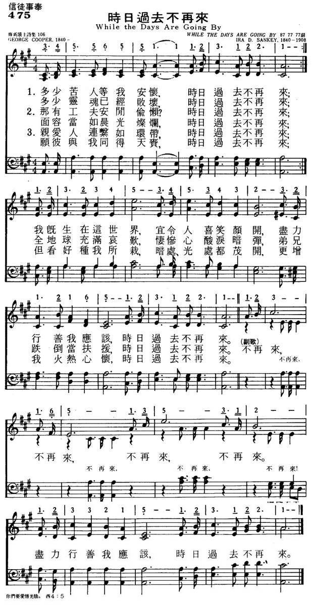

1086c Saviour, More Than Life To Me 每日每時 NP475
|
|
|
|
1 Savior, more than life to me,
I am clinging, clinging close to Thee;
Let Thy precious blood applied,
Keep me ever, ever near Thy side.
Refrain:
Ev'ry day, ev'ry hour
Let me feel thy cleansing pow'r;
May Thy tender love to me
Bind me closer, closer, Lord, to Thee.
2 Through this changing world below,
Lead me gently, gently as I go;
Trusting Thee, I cannot stray,
I can never, never lose my way. [Refrain]
3 Let me love Thee more and more,
Till this fleeting, fleeting life is o'er;
Till my soul is lost in love,
In a brighter, brighter world above. [Refrain]
Source: One Lord, One Faith,
One Baptism: an African American ecumenical hymnal #236 |
1.多少苦人等我安怀，时日过去不再来；
多少灵魂已经败坏，时日过去不再来；
我既生在这世界，宜令人喜笑颜开，
尽力行善我应该，时日过去不再来。
不再来，不再来，不再来，不再来。
尽力行善我应该，时日过去不再来。
2.那有功夫安闲偷懒？时日过去不再来；
面容当如晨光璀璨，时日过去不再来；
全地球充满哀欢，凄惨心酸泪暗弹，
弟兄跌倒当扶援，时日过去不再来。
不再来，不再来，不再来，不再来。
尽力行善我应该，时日过去不再来。
3.亲爱人联系如环带，时日过去不再来；
愿彼与我同得天赏，时日过去不再来；
但看好种我所栽，暗处、光处都茂开，
更增我火热心怀，时日过去不再来。
不再来，不再来，不再来，不再来。
尽力行善我应该，时日过去不再来。
|
|

https://www.mred365.cn/szxg/7478.html

https://hymnary.org/hymn/WASH1957/page/286 |
|
|
|
 Saviour, More Than Life To Me
Saviour, More Than Life To Me
Savior
More Than Life To Me - Song Lyrics with Orchestral backing music
https://www.youtube.com/watch?v=Qu2zpNzGz6Q


維基百科，自由的百科全書
跳至導覽跳至搜尋
|
芬尼·克羅斯貝 |
|
|
|
幕後 |
|
出生 |
Frances Jane Crosby
1820年3月24日
美國紐約州布魯斯特 |
|
逝世 |
1915年2月12日（94歲）
美國康乃狄克州布里奇波特 |
|
職業 |
作詞者、詩人、作曲家 |
|
音樂類型 |
讚美詩、福音音樂 |
|
演奏樂器 |
鋼琴、豎琴、吉他、管風琴 |
|
出道地點 |
紐約市 |
|
活躍年代 |
1844年–1915年 |
|
相關團體 |
George F. Root
William B. Bradbury
William Howard Doane
Robert Lowry
Philip Phillips
Phoebe Palmer Knapp
Ira D. Sankey
George C. Stebbins
William J. Kirkpatrick
Hubert P. Main
Philip P. Bliss
Silas Jones Vail
William Fiske Sherwin
Hart Pease Danks
John R. Sweney |
范妮·克羅斯比，又譯芬尼·克羅斯貝（Frances
Jane Crosby，又名Fanny Crosby，1820年3月24日－1915年2月12日）是一位知名的基督教讚美詩歌詞作者。美國人。她是歷史上最多產的讚美詩作者之一，從幼年起共寫了超過8,000首讚美詩，儘管她是一位盲人。[1]在她活著的時候，范妮·克羅斯比是美國最知名的婦女之一。
直到今天，絕大多數的美國讚美詩集都收入她的作品。她最著名的一些歌曲包括「有福的確據，基督屬我"（Blessed
Assurance） [1]、「耶穌發慈聲要召你回來（Jesus
Is Tenderly Calling You Home）」 [2]、「這個真是何等甘美的故事」（Praise
Him, Praise Him）[3]和「榮耀歸於父神（To
God be the Glory）」[4]。一些出版商不願在詩集中收入同一位作者太多的作品，克羅斯比在她一生中使用將近100個不同的筆名。
范妮·克羅斯比出生在美國紐約州普蘭縣的東南小鎮一個貧窮的家庭，父母是約翰和默西。在6周時，她因感冒引起眼睛發炎，家庭負擔不起進醫院的費用，一個上門的庸醫推薦用熱的膏藥治療，而這弄壞了范妮的眼睛。但范妮在她的自傳中說：『那位大夫知道後便逃之夭夭，....但我活到現在，從來就沒有一刻恨過那位大夫，因我一直知道，慈愛的神，曾藉祂無限的慈愛與奇妙的旨意，....使我還能有機會事奉祂』
他的父親在她一歲時就去世了，因此她是由母親和祖母撫養長大。她們用基督教原則教育克羅斯比，例如，要求她記住大段的聖經。克羅斯比成為紐約市聖約翰衛理公會教堂的活躍成員。
15歲時，克羅斯比被紐約盲人學校（今紐約特殊教育學校）錄取。她在那裡共7年時間，在這期間她學習鋼琴、吉他和歌唱。在1843年，她加入了華盛頓的遊說者行列，爭取對盲人教育的支持。從1847年到1858年，克羅斯比在紐約的學校里教英文和歷史。1858年，她嫁給一個盲人音樂教師亞歷山大（Alexander
Van Alstyne）。由於丈夫的堅持，她繼續使用她的婚前姓氏。他們有一個女兒弗蘭西斯，在幼年就夭折了。亞歷山大也在1902年7月19日去世。
早期寫作生涯[編輯]
克羅斯比8歲時大家就發現她寫詩。她第一部出版作品是一個盲人女孩的詩歌（1844年），接著又出版了蒙特雷的詩歌 （1853年）和哥倫比亞的花環（1858年）。
克羅斯比從不抱怨她的殘疾。在8歲時她對自己的狀況寫下了這些詩句:
-
哦，我的靈魂何等歡喜，
-
儘管我無法看見；
-
我已定規在這塵世
-
我要發奮自強不息。
-
我歡喜發出許多讚美，
-
其他人卻無法如此；
-
我不會，我也不願，
-
因失明而哭泣嘆息。
寫作讚美詩的生涯[編輯]
1863年，克羅斯比創作了她的第一首讚美詩「這是馬其頓的呼聲」。後來，她為包括菲利普·菲利普斯、杜安博士（W.
H. Doane）、桑基（Ira D. Sankey）等許多作曲家譜寫歌詞。在她去世之前，至少寫過8,000首讚美詩。
克羅斯比當時非常出名，經常受到美國總統的接見。在1885年，她在尤里西斯·辛普森·格蘭特總統的葬禮上演唱讚美詩「安穩在耶穌手臂（Safe
in the Arms of Jesus）」。
當她去世時，她的墓碑上寫著「范妮阿姨」和「有福的確據，基督屬我。預嘗神榮耀，何等快活！」
。以利莎用這首詩紀念范妮：
-
這裡的鄉村充滿詩歌與陽光，
-
我們的百靈展開她的翅膀，
-
她在黑暗中歌唱已經太久
-
現今去往美麗的光中歌唱。
克羅斯比安葬在康乃狄克州的布里奇波特。1975年進入福音音樂名人廳。
作品列表（部分）[編輯]
- 「懇求救主格外垂聽（Pass
Me Not, O Gentle Saviour）」 --1868年，杜安作曲
- 「這個真是何等甘美的故事（讚美祂！讚美祂！，Praise
Him, Praise Him）」--1869年， C.G.愛倫作曲
- 「求主使我近十架（Near
the Cross）」--1869年，杜安作曲
- 「速興起傳福音（Rescue
the Perishing）」--1869年，杜安作曲
- 「明亮的未來（The Bright
Forever）」--1871年，H.P.梅因作曲
- 「有福的確據，基督屬我（Blessed
Assurance）」--1873年，P.耐普作曲
- 「靠近主（Close to
Thee）」--1874年，S.J.維爾作曲
- 「一路我蒙救主引領（All
the Way My Savior Leads Me）」--1875年，R.洛利作曲
- 「主，我是屬你（I
Am Thine, O Lord）」--1875年，杜安作曲
- 「榮耀歸於父神（To
God Be the Glory）」--1875年，杜安作曲
- 「救主比生命更寶貴（Saviour,
More Than Life to Me）」--1875年，杜安作曲
- 「安穩在耶穌手臂（Safe
in the Arms of Jesus）」--1878年，杜安作曲
- 「告訴我耶穌的故事（Tell
Me the Story of Jesus）」--1880年，J.R. 斯文迪作曲
- 「救贖（Redeemed, How I Love to
Proclaim It）」--1882年， W.J. 科克派屈克
- 「耶穌發慈聲要召你回來（Jesus
Is Tenderly Calling You Home）」--1883年，G. C.斯特賓斯作曲
- 「 第一羨慕是救主（My Savior First of
All）」--1891年，J. 斯文迪作曲
https://zh.wikipedia.org/wiki/%E8%8A%AC%E5%B0%BC%C2%B7%E5%85%8B%E7%BD%97%E6%96%AF%E8%B4%9D
Words: Frances Jane (“Fanny”) Crosby (b. Mar. 24, 1820; d. Feb. 12, 1915)
Music: William Howard Doane (b. Feb. 3, 1832; d. Dec. 23, 1915)
Links:
Wordwise Hymns (William Doane)
The Cyber Hymnal
Hymnary.org
Note: William Doane was a friend and frequent collaborator with Fanny Crosby, supplying tunes for many of her songs. For example: I Am Thine, O Lord; Near the Cross; Pass Me Not, O Gentle Saviour; ‘Tis the Blessed Hour of Prayer; To God Be the Glory; and Will Jesus Find Us Watching? One day in 1875 Doane sent a tune to his friend, asking that she write a song for it about “every day and hour.” The result is this hymn, which came to be a great comfort to Fanny herself.
In the popular film, It’s a Wonderful Life, George Bailey approaches the evil banker Henry Potter to ask for financial assistance. When George mentions a five hundred dollar insurance policy he could use for collateral, Potter chuckles maliciously, calling him, “A miserable little clerk crawling in here on your hands and knees and begging for help,” adding, “You’re worth more dead than alive.”
Think about that assessment for a moment. What are we actually worth? Of course there are insurance policies. But they benefit our loved ones more than us. There is the money we have in the bank. (For some of us, that’s not much to speak of!) Then, someone has added up the actual worth of our physical bodies to be considered.
Many years ago, the elements that make up the average human body (iron, calcium, and so on) were calculated to be worth about a dollar and sixty cents. With inflation, a more recent approximation comes to ten times that. There is, however, another way to estimate it. Consider the use that can be made of our bone marrow, DNA, organs for transplant, and so on. Looked at that way we could be worth millions of dollars. But, again, Mr. Potter’s sarcastic comment is right; we’re “worth more dead than alive.”
If we were animals, rather than human beings, stating our worth in financial terms might have a point. But we humans are a special creation of God. We are not only physical but spiritual beings. Man has not only a mortal and perishing body, but an eternal soul. The worth of the latter is incalculable. The Lord Jesus asked, rhetorically, “What will it profit a man if he gains the whole world, and loses his own soul? Or what will a man give in exchange for his soul?” (Mk. 8:36-37).
Think of it. Even all the fabulous wealth of all the world cannot be compared to the value of one human soul. To assess what something is worth–including ourselves–we need to adopt a spiritual and eternal value system. Life is more than simply a rocky trip from the womb to the tomb. The “Take your ease; eat, drink, and be merry,” of the rich fool (Lk. 12:16-21) is too short-sighted. Eternity lies ahead.
The Lord Jesus Christ took the condemnation for our sin upon the cross. God the Father laid the debt of all our sin upon His beloved Son. “He made Him who knew no sin to be sin for us” (II Cor. 5:21), so that we, through faith in Christ, could be forgiven. But God’s gift has more long range benefits than that. In the words of Paul, “If in this life only we have hope in Christ, we are of all men the most pitiable” (I Cor. 15:19).
The saving work of Christ qualifies us for eternal blessing. “The gift of God is eternal life in Christ Jesus our Lord” (Rom. 6:23). “For God so loved the world that He gave His only begotten Son, that whoever believes in Him should not perish but have everlasting life” (Jn. 3:16).
And life eternal is not simply quantitative but qualitative. That is, it’s not simply endless days, but endless days in our glorious eternal home, endless days in fellowship with God. “This is eternal life,” said the Lord Jesus, “that they may know You, the only true God, and Jesus Christ whom You have sent” (Jn. 17:3). It’s a life that begins now, and lasts forever. And knowing and loving Christ is the essence of it, for time and eternity.
That’s what Paul believed. He wrote, “What things were gain to me, these I have counted loss for Christ” (Phil. 3:7). The believer’s personal relationship with Christ is an eternal treasure beyond imagining. In 1875, Fanny Crosby published a lovely little gospel song about the surpassing value of that fellowship with the Lord.
CH-1) Saviour, more than life to me,
I am clinging, clinging, close to Thee;
Let Thy precious blood applied,
Keep me ever, ever near Thy side.
Every day, every hour,
Let me feel Thy cleansing power;
May Thy tender love to me
Bind me closer, closer, Lord to Thee.
CH-2) Through this changing world below,
Lead me gently, gently as I go;
Trusting Thee, I cannot stray,
I can never, never lose my way.
CH-3) Let me love Thee more and more,
Till this fleeting, fleeting life is o’er;
Till my soul is lost in love,
In a brighter, brighter world above.
Questions:
1) What value to you place on your relationship with Christ?
2) In what ways will others, hearing you speak, seeing how you live, observe the reality of that?
Links:
Wordwise Hymns (William Doane)
The Cyber Hymnal
Hymnary.org
https://wordwisehymns.com/2016/05/06/saviour-more-than-life-to-me/
"SAVIOR, MORE THAN LIFE TO ME"
"…The blood of Jesus Christ His Son cleanseth us from all sin" (1
Jn. 1.7)
INTRO.:
A
song which talks about the love and care that God has had in wanting us to draw
near to Christ so that His blood can cleanse us from all sin is "Savior, More
Than Life To Me" (#29 in Sacred
Selections for the Church). The text was written by Mrs. Frances Jane
Crosby VanAlstyne, better known by her maiden name, Fanny J. Crosby (1820-1915).
The tune (Every Day and Hour) was composed by William Howard Doane (1832-1915).
In 1875 Doane sent the melody to Miss Crosby and requested that she provide some
words on the theme "Every day and hour." The song first appeared later that year
in Brightest
and Best compiled by Doane and Robert Lowry.
Among hymnbooks published by members of the Lord’s church for use in churches of
Christ during the twentieth century, the song appeared in the 1937 Great
Songs of the Church No. 2 edited by E. L. Jorgenson; the 1935 Christian
Hymns (No. 1), the 1948 Christian
Hymns No. 2, and the 1966 Christian
Hymns No. 3, all edited by L. O. Sanderson; and the 1963 Abiding
Hymns edited by Robert C. Welch. Today it may be found in the
1971 Songs
of the Church , the 1990 Songs
of the Church 21st C. Ed., and the 1994 Songs
of Faith and Praise, all edited by Alton H. Howard; the 1978/1983 (Church)
Gospel Songs and Hymns edited by V. E. Howard; and the 1992 Praise
for the Lord edited by John P. Wiegand; in addition to Sacred
Selections and the 2007 Sacred
Songs of the Church edited by William D. Jeffcoat.
The song tells us what Jesus should mean to us.
I. Stanza 1 refers to Christ as more than life
"Savior, more than life to me, I am clinging, clinging close to Thee;
Let Thy precious blood applied Keep me ever, ever near Thy side."
A. Because Jesus is more than life to the Christian, we should "cleave" (KJV)
to the Lord: Acts 11.23
B. When we do that, we have access to His precious blood, because it is in
Christ that we have redemption through His blood: Eph. 1.7
C. The application of that blood will help keep us near His side: Jas. 4.8
II. Stanza 2 refers to Christ as the object of our trust
"Through this changing world below, Lead me gently, gently as I go;
Trusting Thee, I cannot stray, I can never, never lose my way."
A. This world below is a place that is always changing: Heb. 1.10-12
B. Therefore, we must trust in Jesus to lead us as we go: Ps. 23.1-2
C. Trusting Him, we cannot stray and we can never lose our way: 2 Pet. 1.10-11
III. Stanza 3 refers to Jesus as the one who takes us home
"Let me love Thee more and more, Till this fleeting, fleeting life is o’er;
Till my soul is lost in love, In a brighter, brighter world above."
A. As long as this life lasts, we should love our Lord more and more with all
our heart, soul, and mind: Matt. 22.37
B. However, we must remember that someday this fleeing life will be ended in
death: Heb. 9.27
C. Then, if we have followed Jesus, our souls will be in a brighter world
above: Jn. 14.1-3
IV. Stanza 4 as the one who led us in life
"Then I’ll see what Thou hast wrought; Then I’ll love Thee, love Thee as I
ought.
Looking back, I’ll praise the way Thou hast led me, led me day by day."
A. When we are dwelling in that brighter world above, we shall be able to see
that God has worked out all things together for our good: Rom. 8.28
B. Then, we shall also love Him as we ought because we shall see Him as He is:
1 Jn. 3.1-2
C. Also, we can join with the heavenly hosts in praising Him for what He has
done for us: Rev. 5.8-12
CONCL.:
The
chorus continues to emphasize the need to strive for closeness to the Lord:
"Every day, every hour, Let me feel Thy cleansing power;
May Thy tender love to me Bind me closer, closer, Lord, to Thee."
One book in my collection that has this hymn was published by a religious group
that is notorious for changing hymns to fit their peculiar doctrines, including
a belief that the righteous shall not go to heaven but shall live forever upon a
renewed earth. Stanza 3 was thus altered to read,
"Till my soul has gained the bliss Of a higher, higher state than this."
All other sources that I checked had but three stanzas. Only this book had
four, so I do not know if it was a stanza from Miss Crosby that has been
universally omitted in most books or if it is a stanza added by the editors of
the book, but it is not in the combined Gospel
Hymns Nos. 1-6 Complete edited by Ira D.Sankey, who was
President of Biglow and Main which published most of Fanny’s hymns, so it is
likely that the stanza was added later. In any event, as I consider the love and
care that God has demonstrated to me by the spiritual blessings available in
Christ, I should be able to look upon Jesus as a "Savior, More Than Life To Me."
https://hymnstudiesblog.wordpress.com/2008/10/23/quotsavior-more-than-life-to-mequot/
{kind=link}